Cutting Board¶
Build¶
Build a Cutting Board with any wooden pressure plate on any STRIPPED_ block.
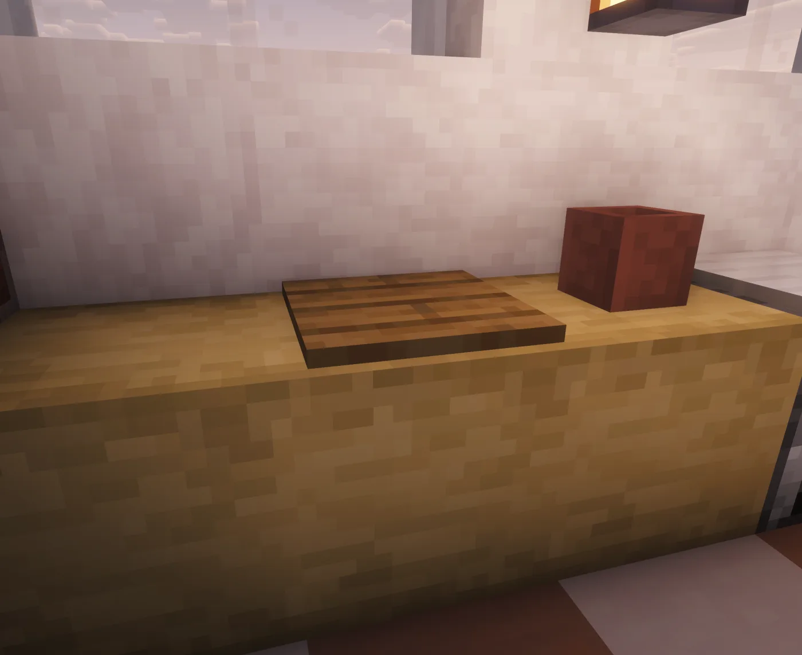
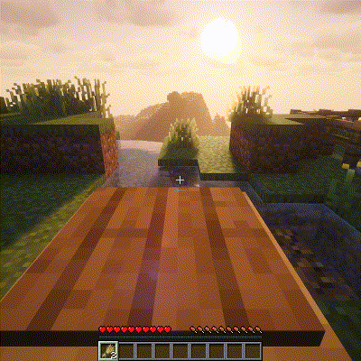
Core Loop¶
The Cutting Board handles prep work such as flour, pasta, minced ingredients, and sliced recipe steps.
How Recipes Behave Here¶
The Cutting Board is prep work: chopping, slicing, mincing, and turning raw ingredients into precise recipe components. It is intentionally not a generic table; many recipes need the prepared form before another station accepts them.
Common Chains¶
WHEATcan become flour-style ingredients used by dough and batter chains.- Meat and plant alternatives can become minced or sliced components for later meals.
- Pasta and similar prep items are made here before being boiled or cooked.
Good First Recipes¶
Start with flour or pasta prep. Those recipes teach the difference between vanilla ingredients and Heirloom intermediate items.
What Can Go Wrong¶
Use the correct physical station: wooden pressure plate on a stripped block. If a food chain seems blocked, search the output you expected; the missing step is often a Cutting Board ingredient rather than the final station.
Recipes¶
| Recipe | Output | Inputs | Source |
|---|---|---|---|
ASIAN_FEAST_BENTO |
 ASIAN_FEAST_BENTO ASIAN_FEAST_BENTO |
 2 2   0-1 0-1 |
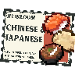 |
ASIAN_MAKI |
 ASIAN_MAKI_SALMONDefault Salmon Maki ASIAN_MAKI_SALMONDefault Salmon Maki Vegetable Maki Vegetable Maki Tropical Maki Tropical Maki |
 or or or or or or or or oror oror  |
|
ASIAN_PUFFERFISH_SASHIMI |
 ASIAN_SASHIMI_PUFFERFISH ASIAN_SASHIMI_PUFFERFISH |
 |
|
ASIAN_SASHIMI |
 ASIAN_SASHIMI_SALMONDefault Salmon Sashimi ASIAN_SASHIMI_SALMONDefault Salmon Sashimi Cod Sashimi Cod Sashimi Tropical Fish Sashimi Tropical Fish Sashimi |
oror |
|
BLT |
 BLT BLT |
 or or or or  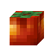 |
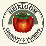 |
CORNMEAL |
 CORNMEAL CORNMEAL |
 |
|
DRY_PASTA |
 DRY_PASTA DRY_PASTA |
 |
|
DRY_PASTA |
DRY_PASTADefault Dry Pasta Rice Noodles Rice Noodles |
|
|
FLOUR |
 BAG_OF_FLOUR BAG_OF_FLOUR |
 |
|
GINGERBREAD_HOUSE |
GINGERBREAD_HOUSE | 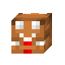 1-3  or or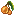 0-2 |
|
MINCED_MEAT_BEEF |
 MINCED_MEAT MINCED_MEAT |
 or or or or |
|
SUSHI |
SUSHI |
orororor |
|
SUSHI |
 SUSHIDefault Salmon Nigiri SUSHIDefault Salmon Nigiri Cod Nigiri Cod Nigiri Tropical Fish Nigiri Tropical Fish Nigiri Tamago Nigiri Tamago Nigiri Mushroom Nigiri Mushroom Nigiri Unagi Nigiri Unagi Nigiri |
orororororor or or |
|
SUSHI_ROLL |
 SUSHI_ROLL SUSHI_ROLL |
 ororor ororor |
|
VALENTINES_CHOCOLATE |
VALENTINES_CHOCOLATE |   ororororor ororororor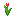 oror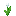 or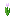 oror oror oror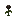 orororor |
Troubleshooting¶
Use sword or axe-style tools for chopping interactions. Non-wood pressure plates are reserved for other stations or ignored.
See the full recipe index for ingredient links, processing time, recipe rules, and output actions.